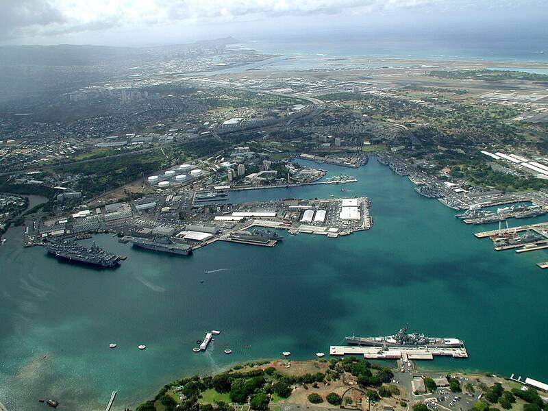

Joint Base Pearl Harbor-Hickam
Hawaii

Headquarters of the U.S. Pacific Fleet. 1
Open in the interactive Watcher
Sources
- Joint Base Pearl Harbor–Hickam Wikipedia
Hawaii

Headquarters of the U.S. Pacific Fleet. 1
Open in the interactive Watcher